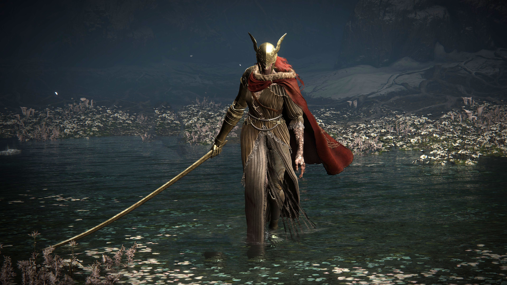

Malenia is Elden Ring's most notorious boss, renowned as one of the finest warriors in the Lands Between. She is one of the twin children of Marika and Radagon, afflicted from birth with the Scarlet Rot. Malenia's loss of her eyes and three of her limbs to the condition hasn't stopped her from being one of the Shattering's most lethal combatants, however.(https://www.cbr.com/every-demigod-elden-ring-explained/)
Quotes on Malenia
"..Heed my words. I am Malenia. Blade of Miquella. And I have never known defeat."
"Wait. The scarlet bloom flowers once more. You will witness true horror. Now, rot!"
"I dreamt for so long. My flesh was dull gold...and my blood, rotted. ... As I awaited...his return. ...Heed my words. I am Malenia. Blade of Miquella. And I have ..."